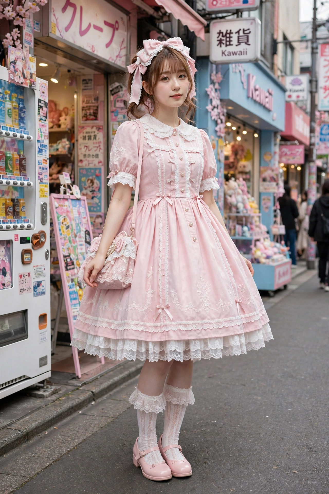

Lolita fashion
From Wikipedia, the free encyclopedia

Lolita fashion (Japanese: ロリータ・ファッション, rorīta fasshon) is a fashion subculture that originated in Japan and is primarily influenced by Victorian clothing, as well as Rococo and other European styles. Often classified simply as "Lolita" (ロリータ), it is characterized by a modest, bell-shaped silhouette created by petticoats worn beneath dresses, knee-high socks, lace trims, and elaborate accessories. The style emerged in Japan in the 1970s and 1980s and has since spread internationally.
Despite its name, Lolita fashion has no connection to Vladimir Nabokov's novel Lolita (1955); the name was adopted within the Japanese fashion community as an evocation of cuteness and nostalgia rather than any element of the novel's themes.
History
The style coalesced during the 1970s alongside Japan's "kawaii" (cute) culture boom, and brands such as Milk (founded 1970) and Pink House helped define the soft, romantic aesthetic. In the 1980s and 1990s, the style developed in Tokyo's Harajuku district, and brands like Baby, The Stars Shine Bright (founded 1988) and Angelic Pretty became closely associated with it. The genre gained wider visibility through visual kei musicians such as Mana of Malice Mizer, who popularized the related "Elegant Gothic Lolita" label through the Moi-même-Moitié brand, and through the manga-influenced artist and designer Novala Takemoto, whose novel Shimotsuma Monogatari (Kamikaze Girls, 2002) was adapted into a popular film in 2004.
Styles
Major substyles include:
- Sweet Lolita — pastel colors, prints featuring sweets, fruit, and childhood motifs, abundant lace and bows.
- Gothic Lolita — darker colors, black and deep red ensembles, crosses and other gothic motifs, while retaining the Lolita silhouette.
- Classic Lolita — more muted, mature patterns, floral prints, and A-line silhouettes referencing historical European dress.
- Punk Lolita — plaid fabrics, chains, and deconstructed elements combined with the bell silhouette.
- Country Lolita — straw hats, gingham, and basket accessories.
Community
Lolita communities organize meet-ups, tea parties, and fashion walks, and the style is sold internationally through Japanese brands' overseas stores and independent designers. The community maintains its own terminology, including "coord" (a coordinated outfit) and "ita" (a poorly executed, mismatched outfit, from the Japanese itai, "painful" to look at).